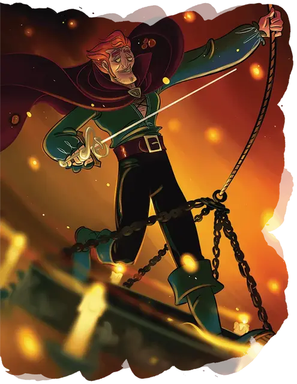

Виари
Viari
Средний Гуманоид (Человек), хаотично-добрый, именной НИП

Класс Доспеха 18 (проклёпанный доспех +1; 19 при владении 2 оружиями)
Хиты 65 (10к8 + 20)
Скорость 30 футов
| мод | спас | ||
|---|---|---|---|
| СИЛ | 12 | +1 | +1 |
| ЛОВ | 20 | +5 | +8 |
| ТЕЛ | 14 | +2 | +2 |
| мод | спас | ||
|---|---|---|---|
| ИНТ | 10 | +0 | +3 |
| МДР | 8 | −1 | −1 |
| ХАР | 14 | +2 | +2 |
Навыки Акробатика +11, Атлетика +7, Восприятие +5, Выступление +5, Ловкость рук +11, Скрытность +8, Убеждение +5
Чувства пассивное Восприятие 15
Языки Общий, Воровской жаргон, Драконий
Опасность 5 (1800 опыта)
Бонус мастерства +3
Особенности
Увёртливость. Если Виари попадает под действие эффекта, который позволяет совершить спасбросок Ловкости, чтобы получить половину урона, Виари не получает урона при успехе и половину урона при провале. Он не может использовать эту особенность, если становится недееспособным.
Работник второго этажа. Лазанье не требует от Виари дополнительного передвижения. Кроме того, когда он совершает прыжок с разбега, расстояние, которое он преодолевает, увеличивается на 5 футов.
Скрытая атака (1/ход). Виари наносит дополнительный урон 14 (4к6), когда попадает по цели оружием и имеет преимущество на бросок атаки или когда цель в пределах 5 футов от союзника Виари, являющегося дееспособным и у Виари нет помехи к броску атаки.
Действия
Мультиатака. Виари совершает две атаки Коротким мечом и две атаки Рапирой.
Короткий меч +1. Рукопашная атака оружием: +9 к попаданию, досягаемость 5 футов, одна цель. Попадание: 9 (1к6 + 6) колющего урона.
Рапира. . Рукопашная атака оружием: +8 к попаданию, досягаемость 5 футов, одна цель. Попадание: 9 (1к8 + 5) колющего урона.
Кинжал. . Рукопашная или дальнобойная атака оружием: +8 к попаданию, досягаемость 5 футов или дистанция 20/60 футов, одна цель. Попадание: 7 (1к4 + 5) колющего урона.
Реакции
Невероятное уклонение. Виари уменьшает вдвое урон от попавшей по нему атаки. Виари должен видеть нападавшего.
Описание
“Я знаю историю об этом...”
Продукт жизни на ферме в маленьком городке, бродяга, известный как Виари, хранит теплые воспоминания о тех детских днях и своей любящей семье. (Ну, за исключением того случая, когда его родители настаивают на том, чтобы считать его старшего брата успешным.) Но он может быстро проявить застенчивость, когда говорит о том, откуда он родом, и он никогда не говорит об имени, которое носил в той прошлой жизни. После быстрого роста в рядах Acquisitions Incorporated с момента присоединения к этой августейшей команде Виари возглавил так называемый отдел Поножовщины данной организации.. Мощная угроза как в дуэлях, так и в серьезных дебатах, он демонстрирует равное умение планировать и продумывать, безумные боевые приемы (включая прыжки с высоких мест, когда это возможно) и темную месть.
Карьера Виари как искателя приключений едва не оборвалась во время битвы, о которой до сих пор поют барды. Создав разрушительную атаку с помощью метко названного Кинжала Апокалипсиса, разбойник в одиночку уничтожил великана - и потерял руку в процессе. Хотя Виари был восстановлен телесно столь же драматичным магическим способом, некоторые из самых близких к нему людей заметили, что эти чудесные события все еще давят на него, возможно, предполагая последствия, которые только он предвидит.